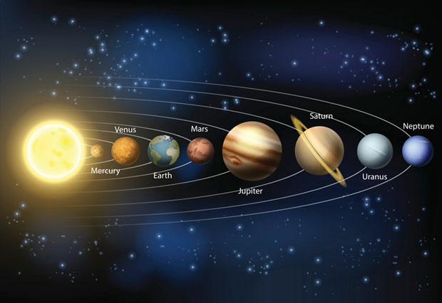
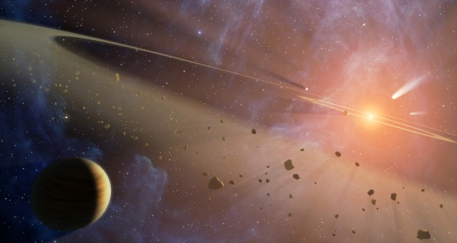

Марс ОВДЕ
Венера ОВДЕ
Земља ОВДЕ
 Сунчев или Соларни систем чини Сунце и сва небеска тела која су гравитационо везана за њега. Сунчев систем је подручје у васиони где је његова гравитациона сила доминантна, тј. већа од гравитационих сила других звезда и Галаксије. Небеска тела која припадају Сунчевом систему су: планете, њихови природни сателити и мала тела Сунчевог система. У мала тела Сунчевог система спадају: астероиди, објекти у Којперовом појасу, комете, метеориди и међупланетарна прашина. Систем садржи 8 планета, 3 патуљасте планете, више од 200 њихових природних сателита, те мноштво ситних тела: комета, планетоида, тела Којперовог појаса, метеороида и међупланетна прашина. Сунчева плазма испуњава хелиосферу, а гравитацијски се утицај шири до подручја Ортовог кометског облака (Јан Хендрик Орт), који се налази ближе од суседних звезда. Осам планета разврстано је у две групе, унутрашњу или терестричку, где се налазе Земља и њој сличне 3 планете (Меркур, Венера и Марс), и спољашњу или јовијанску, с Јупитером и њему сличним дивовским планетама Сатурном, Ураном и Нептуном. Унутрашња је група стеновита, с танким атмосферским слојем (без њега је једино Меркур). Јовијанске су планете гасовите с малом стеновитом језгром, и њихов састав је сличан саставу протопланетног облака из којега су планете настале. Хемијски састав Јупитера готово је идентичан Сунчевом. Разлика између те две групе планета последица је развоја у којем је зрачење младог Сунца загрејало језгра ближих планета и очистило их од лако испаривих елемената. Добивши тако чврсту површину, на њој се геолошким процесима развила секундарна атмосфера од претежно угљен-диоксида (Венера и Марс) и терцијарна атмосфера Земље од азота и кисеоника. Све планете осим Земље прозване су по грчким римским божанствима. Патуљасте планете су према одређењу Међународног астрономског савеза из 2006, Церес, који је највеће тело главнога планетоиднога појаса, као и Плутон и Ерида, који су највећа транснептунска тела. Ерис је откривен 2003. године и има пречника у опсегу од 2 400 до 3 000 km, већи је од Плутона и заједно с пратиоцем Дисномијом међу најдаљим је познатим члановима Сунчева система (средња удаљеност од Сунца 67,7 астрономских јединица или АЈ). Главни планетоидни појас је смештен у подручју између Марса и Јупитера, садржи мала чврста тела грађена од стена и метала. Та се тела развијају сударима, а крећу се око Сунца истим смером као и планете, али су им стазе издуженије, због чега неки одлазе даље од Сатурна или се приближавају Сунцу ближе од Меркура. Због интензивног праћења и побољшања мерних метода, у новије је доба откривен знатан број планетоида који пролазе покрај Земље. Ближа транснептунска тела крећу се у близини еклиптичке равнини, док су даља више распршена па се деле у Којперов појас (Џерард Кајпер) и у распршени диск. Грађена су од стена и леда. Претежно залеђена тела, с уделом прашине, су комете, мањи део којих се налази у подручју дивовских планета (краткопериодне комете), док већина пристиже из Ортовог облака и има периоде од више хиљада година (дугопериодне комете). Изграђене су од залеђене материје, комете воде порекло из простора иза Нептуна. Комете у пролазу близу Сунца развијају кому и реп те се поступно распадају. Остареле комете без испарљиве материје наликују планетоидима. Настанак и развој Сунчевог система објашњаван је посљедњих неколико векова низом козмогонијских хипотеза и теорија. Постојећи подаци доказују да су планете формиране од материје присутне у међузвезданом облаку од којега је настало и Сунце пре 4,65 милијарди година. Тела мање масе и она удаљенија од Сунца брже су се хладила, због чега је старост најстаријих стена појединих тела различита (на пример на Месецу 4,45 милијарди година, а на Земљи 3,7 милијарди година). Удаљене планете и њихови сателити брже су постигли садашњу ниску температуру па су гравитацијском силом привукли гас из маглине. Да се избегла забуна, други системи називају се планетарним системима. У већини других језика назив је изведен из лат. Sol, што је латинско име за Сунце.
Врх страницеПрема данашњем схватању, пре око 4,6 милијарди година настао је Сунчев систем. Постанак и развој планетарног система одвијао се у неколико корака објашњених у Кант-Лапласовој теорији. Имануел Кант (1724-1804) је замислио (Општа природна историја и теорија неба, 1755) да је наш свет настао механички, по природним законима, из маглине (огромног облака ситне материје). Кантову замисао пред крај XVIII века надоградио је и детаљније описао Пјер Симон Лаплас (1749-1827) у Приказ система света (1796). Према том објашњењу Сунчев систем настао из огромног међузвезданог облака који је почео да се полако обрће око своје осе и добијао спљоштени облик диска. Почетно споро обртање диска космичке материје се убрзавало према импулсу, а све брже обртање диска доводило је до јачања центрифугалне силе и на рубу диска део тог облака материје се одвојио,али је и даље кружио око главне масе у диску. Материјал у том рубном прстену, настајућег Сунчевог система, под дејством привлачења (гравитације) окупљао се око највеће масе у њему и настајала је једна планета, али главни диск материје у средишту поново је убрзао своје обртање и дошло је до одвајања новог прстена од кога је после настала нова планета. Процес се понављао док није настао садашњи Сунчев систем. Зависно од материјала од која су настале, планете и њихови већи сателити пролазе кроз геолошки развој. Садашње стање тела у планетном систему је последица начина настанка и развоја који је следио након постанка. Судећи по развоју звезда, Сунчев систем је настао из међузвезданог материјала који се налазио у спиралном краку наше Галаксије (Млечни пут). Хладни облаци гаса и праха постоје у галактичкој равни и данас, много година након настанка првих звезда Галаксије. Да би се ти облаци претворили у звезде, гравитациона сила мора надјачати тежњу гаса да се шири (експандира). Да би гравитацијско привлачење надвладало, густину облака оно мора при датој температури прећи неку критичну вредност. Развијена су два модела по којима долази до повећања густине: улазак међузвезданог облака у подручје спиралног крака галаксије или појава супернове у непосредној близини. Изучавање галаксија показује да је у краковима међузвездана материја веће густине него изван кракова, па се с уласком облака у спирални крак облак успорава и сабија. С друге стране, супернове ударним таласима збијају међузвездану материју. У случају нашег система постоји евиденција да је дошло до експлозије супернове. У угљоводоничним метеоритима нађени су изотопи који су потомци радиоактивних елемената кратког времена живота, а који се производе у току експлозије супернове. Према броју атома изотопа процењено је да је од појаве супернове, до стврдњавања метеоритског материјала, прошло од неколико милиона до неколико десетина милиона година.
Врх страницеПриликом одвајања од других делова међузвезданог облака прасунчева маглина задржава галактичко магнетско поље - важно својство међузвезданог простора, а задржава и динамичко стање у којем се облак налазио. Прасунчева маглина се зато при осамостаљењу врти (ротира), и у односу на средиште галаксије, и у односу на друге галаксије. Маглина наставља са урушавањем. Материја пада према средишту облака где настаје младо Сунце. Оно се због сажимања загрева и све јаче светли. Најјаче је загрејано у средишту, и ту се почињу јављати термонуклеарне реакције, које ће му давати енергију у дугом низу година. Сунце престаје са сажимањем тек када експанзивни притисак гаса порасте и изједначи се с хидростатичким притиском. За време сажимања Сунца и сажимања целе маглине, а због сачувања угаоне количине кретања, Сунце и маглина се врте све брже. Што је диск пљоснатији, то се брже врти. Диск је тело осне симетрије и има једну особену раван - раван екватора. Оне честице које се још не налазе у екваторској равнини привлачи, осим Сунца, и већа маса која се већ налази у екваторској равни; честице „падају“ у раван екватора. То омогућују, и томе доприносе, нееластични судари међу честицама, јер се у току нееластичног судара смањује компонента брзине нормална на екваторску раван (слично се дешава код Сатурнових прстена). Такво понашање јаче је изражено код зрнаца праха него код слободних атома, па се прах врло брзо таложи у слој у екваторској равни; која је много тања од маглине. Стазе будућих планета ће бити ограничене ширином слоја па не морају да леже тачно у равнини Сунчевог екватора.
Врх странице Однос данашњих погледа на постанак планета према космолошким теоријама, као што је Кантова и друге је резултат искустава бројних истраживача, проверених непосредним подацима о физичком стању тела, о саставу њихових атмосфера, рељефу, хемијском и минералошкој структури, радиоактивном датирању, магнетском пољу, гравитацијском пољу. Од теорије Имануела Канта (1755) и Пјер Симон Лапласа (1796) преузета је идеја о настанку Сунца и планета из међузвездане маглине (небуларна теорија). Кант је пошао од идеје хладног облака прашине у којем се приликом гравитацијског сажимања ротација јавља сама од себе - што није могуће (унутрашње силе не могу од хаотичног кретања произвести уређено). Кант не иде даље од општих природословно-филозофских поставки. Лапласова теорија је прва математички обрађена теорија. Лаплас претпоставља да већ постоји усијана маглина која ротира те прати како се маглина хлади, згушњава и убрзава ротацију. Данашњи след аргумената је друкчији: маглина се не сажима због хлађења, већ због превласти гравитацијског привлачења, а притом се, уз убрзање ротације, гравитацијском енергијом загрејава. Када постигну брзину кружења, спољашњи делови маглине више не притискају на средишње делове. Постали су самостални и имају облик прстена. Средишња се маса даље сажима и тиме раздваја од прстена. Од прстена настају планете. Планете би тако морале настати поступним сажимањем средишње масе која за собом редом оставља прстенове. А сателити би морали настати истим процесом при убрзавању ротације планета, које су по Лапласу на почетку такође гасовите. Постоји још један битан недостатак теорије. Оставивши самосталан прстен, централна маса би при сажимању требало да задржи већи део угаоне количине кретања. Доказ против теорије је и кретање Сатурна и његових прстенова: унутрашњи делови Сатурновог прстена крећу се брже од Сатурнове површине; слично се и Фобос креће брже од Марсове површине. По данашњем тумачењу небуларне теорије маглина не долази у стање нестабилности због ротације. Осим тога, у одвојеном прстену пре ће доћи до ретроградне ротације планета него до директне. Теорије Канта и Лапласа напуштене су почетком 20. века углавном стога што нису успеле директно предвидети расподелу количине кретања.
Mоји подаци: Теодора Коларов 41, Гимназија "20. октобар" Бачка Паланка
Мејл адреса: АДРЕСА